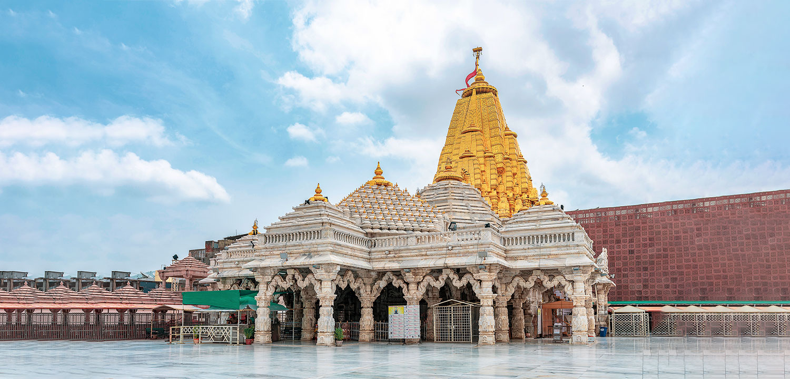

Akshardham Temple is one of the largest Hindu temples in India and the World which is located at Gandhinagar, the capital of Gujarat. Bhagwan Swaminarayan is the primary deity worshipped inside the temple. Besides the idol visit inside the temple, there are exhibitions, research, architectural buildings in the total 23 acres of land. This beautiful temple is located just 28 kilometers from Ahmedabad at J Road, Sector 20, and Gandhinagar. Click here to know more
Ambaji is a major sacred place in Gujarat and the temple is associated with Goddess Amba and Lord Krishna. Ambaji Temple is one of the most popular Hindu pilgrim spots. This beautiful temple is located some 179 kilometers from Ahmedabad. Click here to know more
One of the Char Dhams of India, Dwarka has a special place in the hearts of Hindu pilgrims and spiritual seekers. The other three Dhams are Badrinath-Kedarnath, Puri, and Rameswaram. Dwarka was the city ruled by the Hindu God and Avatar of Lord Vishnu…shree Krishna and its home to some of the most splendid Hindu temples all dedicated to Lord Krishna…the Dwarkadhish. The religious hub of Dwarka is 441 km from Ahmedabad. Some great temples to see here are Shri Dwarkadhish Temple, Nageshwar Jyotirlinga, Rukshamanee temple etc. Click here to know more